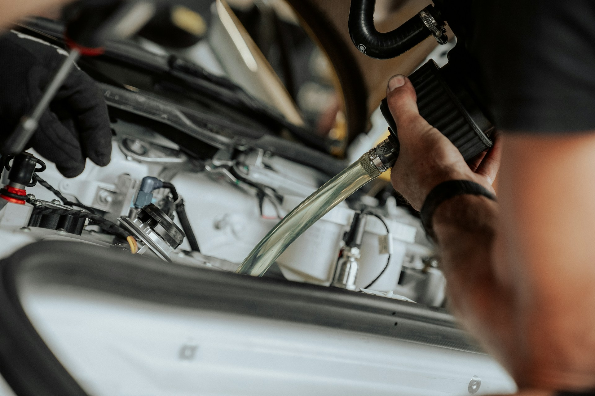
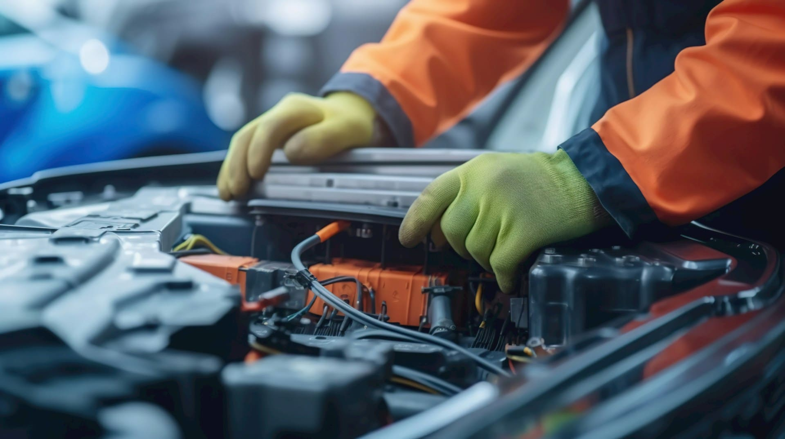
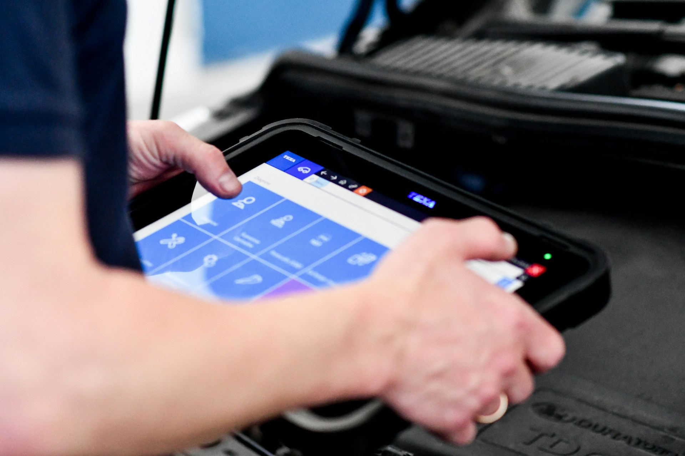
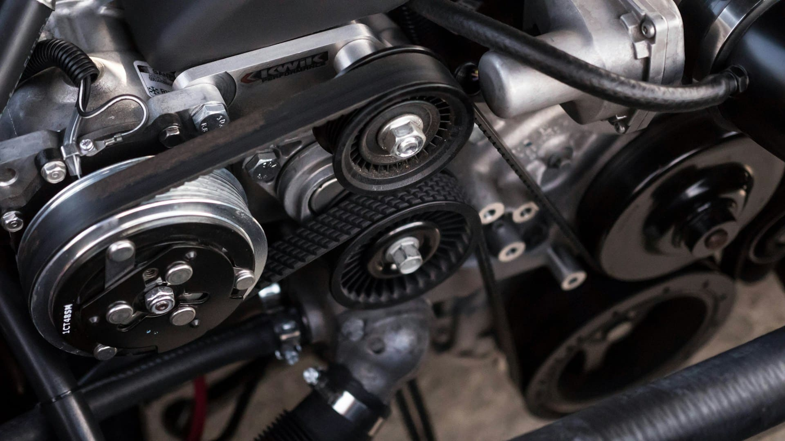
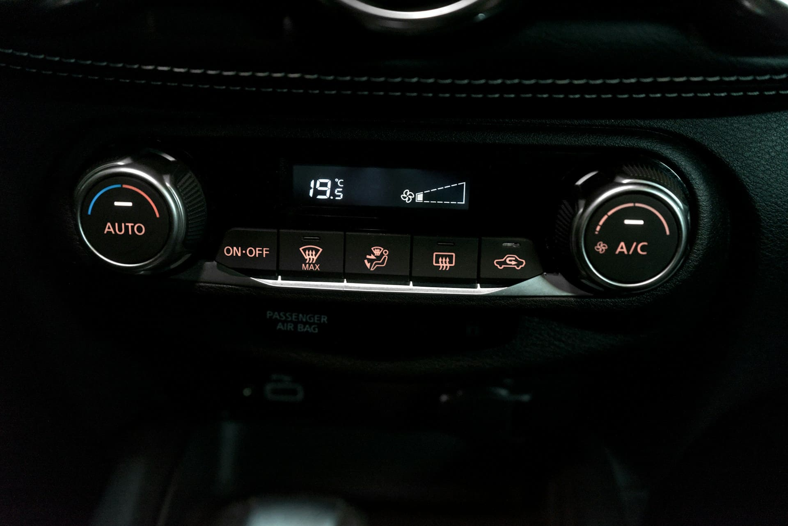
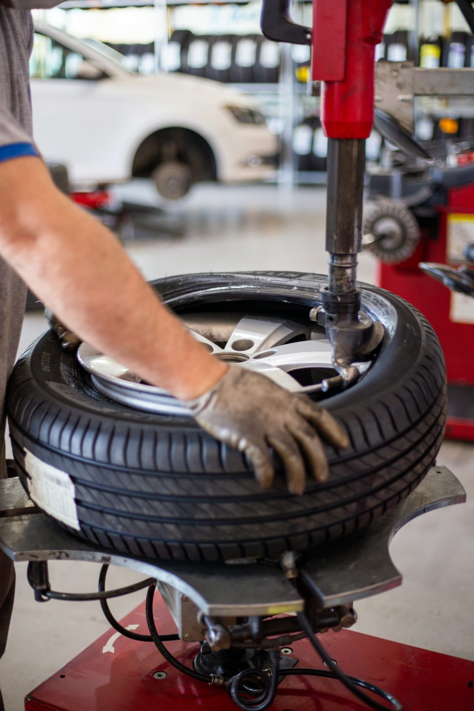
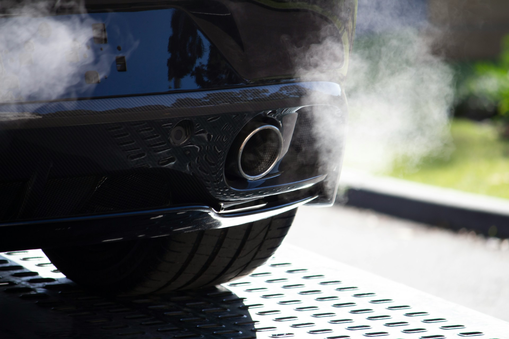

Révision & Entretien
Vidange, remplacement des filtres (huile, air, habitacle) et points de contrôle complets. Nous respectons scrupuleusement le carnet d'entretien constructeur pour préserver votre garantie.
Contactez-nous →Bienvenue chez HAL AUTO
Votre garage multimarque pour l'entretien, la réparation mécanique et l'électricité automobile. Du diagnostic électronique aux pannes complexes, profitez d'interventions fiables au juste prix, sans mauvaises surprises.
Contrôles rigoureux et équipements certifiés pour votre tranquillité
Devis détaillés et explications claires avant chaque intervention
Plus de 23 ans d'expérience au service de votre véhicule

Passionnés de mécanique et basés à Nîmes, notre atelier propose un service complet de garage automobile. Du remplacement de vos disques et plaquettes à notre expertise d'électricien automobile, nous mettons notre rigueur au service de votre sécurité.
Qu'il s'agisse d'un entretien de routine ou d'une recherche de panne complexe, notre équipe est là pour vous conseiller. Notre engagement : qualité, honnêteté et satisfaction client.
Des services complets pour l'entretien et la réparation de votre véhicule

Vidange, remplacement des filtres (huile, air, habitacle) et points de contrôle complets. Nous respectons scrupuleusement le carnet d'entretien constructeur pour préserver votre garantie.
Contactez-nous →
Voyant allumé ? Notre valise de diagnostic dernière génération lit les codes défauts moteur, ABS et airbag avec une précision chirurgicale pour identifier la panne rapidement. Spécialistes en électricité automobile, nous assurons la programmation et l'adaptation de modules neufs et occasion, ainsi que la remise à zéro des voyants après réparation.
Contactez-nous →
Remplacement de distribution (kit + galet + pompe à eau), embrayage, plaquettes et disques de freinage, et changement moteur. Pièces d'origine ou équivalentes garanties.
Contactez-nous →
Recharge de gaz pour un air frais toute l'année. Nous gérons aussi votre visibilité : remplacement d'essuie-glaces et contrôle de l'éclairage pour rouler en toute sécurité.
Contactez-nous →
Montage et équilibrage de pneus toutes marques. Nous gérons l'ensemble de votre train roulant : amortisseurs, triangles, rotules et système de direction pour une tenue de route parfaite.
Contactez-nous →
Nettoyage et remplacement de vanne EGR, régénération FAP, diagnostic des pertes de puissance, ainsi que l'entretien du système de dépollution et du circuit AdBlue.
Contactez-nous →
Évitez la contre-visite ! Check-up complet des points de contrôle, réparations nécessaires et présentation de votre véhicule au centre de contrôle.
Contactez-nous →Cliquez ci-dessous pour nous appeler directement :